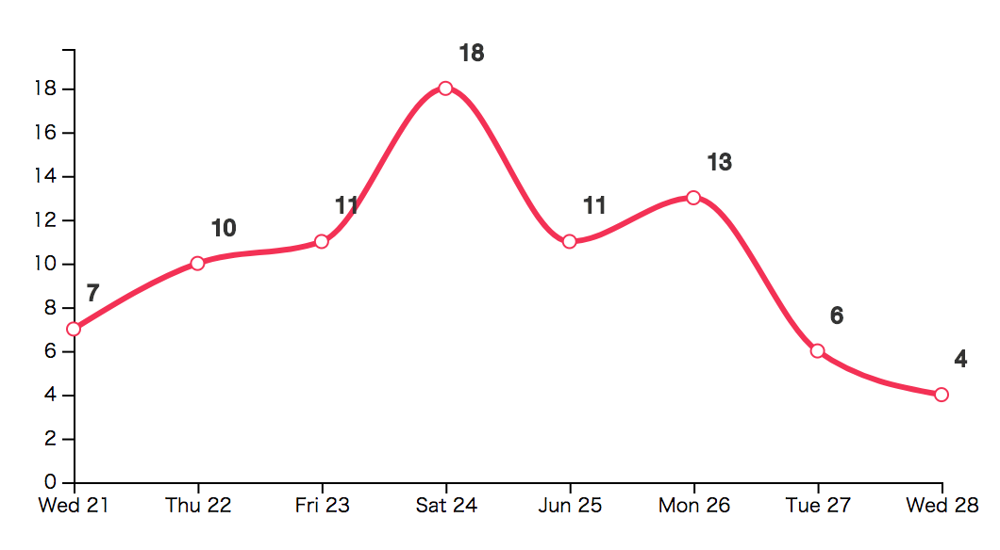

d3-折线图
从一个最基本的折线图开始，看看d3是怎么实现的，以及用到哪些知识
需要的知识
步骤
获取svg容器
<svg width="500" height="270" class="testline"></svg> const svg = d3.select('.testline'); const margin = {top: 20, right: 20, bottom: 20, left: 20}; const width = +svg.attr("width") - margin.left - margin.right; const height = +svg.attr("height") - margin.top - margin.bottom; const g = svg.append("g").attr("transform", `translate(${margin.left},${margin.top})`);
x，y轴缩放
这里，如果x轴是与时间有关的，可以直接使用d3提供的scaleTime()来实现时间的转换。关于scale还有好多内容，待总结。这里需要确定两个轴，缩放的类型，以及xy轴图像在屏幕中的实际宽高值。
这里的x,y其实是函数（根据给出的数据，得出该数据的x，y坐标值）。const x = d3.scaleTime().range([0, width]); const y = d3.scaleLinear().range([height, 0]);line
line的生成就需要上面的轴缩放函数。 这里是因为date函数可以接受ms的unix时间戳，所以乘以1000.这里也可以加一些点与点之间的连接方式。curveMonotoneX平滑,curveLinear线性。需要两步，line函数生成。line呈现。
关于line的展示，需要把数据绑定到path标签上，将line函数运用到path的d属性上。就可以绘制出线了，transition这里是为了实现简单的动画效果。
注意，line展示的时候，data([data]) 也可应用datum(data)，前者删了数组标记是不可以的。不知道为什么const line = d3.line() .x((d, i) => x(d.ts * 1000)) .y(d => y(d.y)) .curve(d3.curveMonotoneX); // line 的展示。 g.append('path') .data([data]).attr('fill', 'none').attr('d', line).attr('stroke', '#f33155') .transition(500) .attr('stroke-width', 3);x坐标轴，y坐标轴
domain是将坐标轴对应的真实数据连接起来，一般就是将坐标轴要展示的数据的最大最小值放进来。d3.extent可以自动的算出数组内的最小，最大值，很方便。如下x轴的计算。
v4支持axisBottom，axisTop，axisRight，axisLeft等快捷操作，就是说明坐标轴的展现方式。
规定好domain后，可以将轴展示在图像中了。给出selector然后调用call(如果是x轴，记得把上面x轴函数传进来，y轴同理)，同时，这里可以规定轴线样式和刻度的相关内容。下面的例子是规定了，最大最小值中间还可以有多少个刻度。x.domain(d3.extent(data, d => d.ts * 1000)); y.domain([0, d3.max(data, d => d.y * 1.1 )]); // Add the X Axis g.append("g").attr("transform", `translate(0,${height})`) .call(d3.axisBottom(x).ticks(5)); // Add the Y Axis g.append("g").attr("transform", `translate(0,0)`) .call(d3.axisLeft(y).ticks(8));线上打点
线上打点，主要是通过line函数，获取点的center位置。需要将data绑定到circle标签上，最后根据line函数绘制出来。g.selectAll(".dot") .data(data).enter().append("circle").attr('class', '.dot') .attr("cx", line.x()).attr("cy", line.y()) .transition(500) .attr("r", 3.5).attr('fill', 'white').attr('stroke', '#f33155');
数据label
类似的，label也是根据line函数获取位置，然后将要现实的值，用text属性显示出来。g.selectAll(".text") .data(this.data).enter().append("text") .attr('class', '.text').attr('font-size', 12) .attr("x", line.x()).attr("y", line.y()) .attr('dx', -15).attr('dy', 7) .text(function(d) { return d.y}) .transition(500) .attr('fill', '#333').attr('stroke', '#333');
当绑定了data数据后，x函数，y函数，会自动按顺序获取数据。
最后结果：
参考
